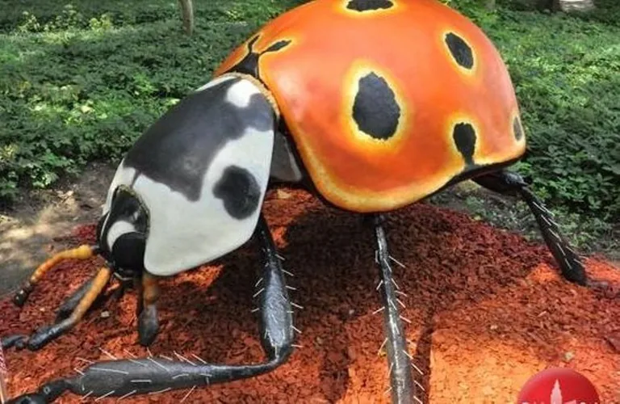
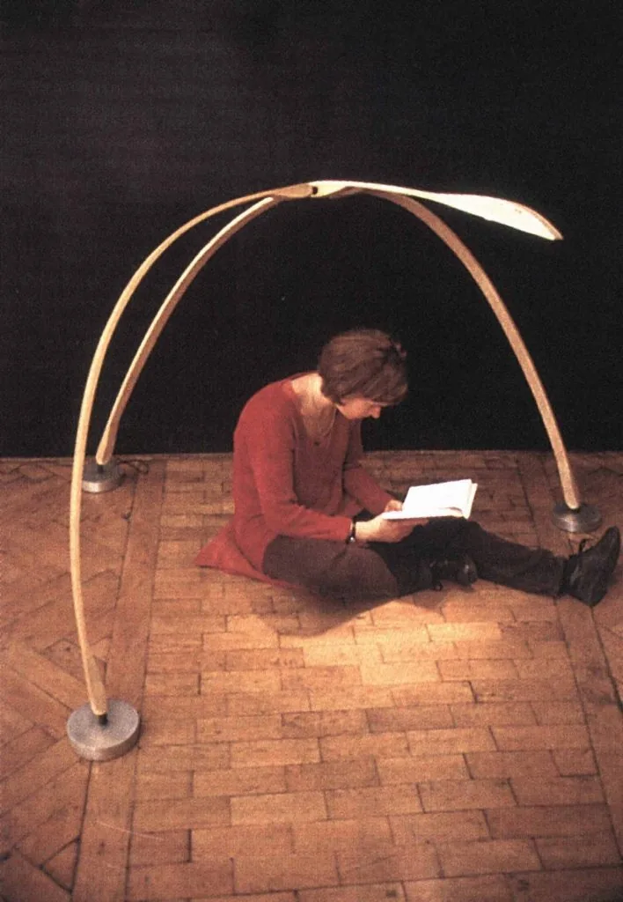
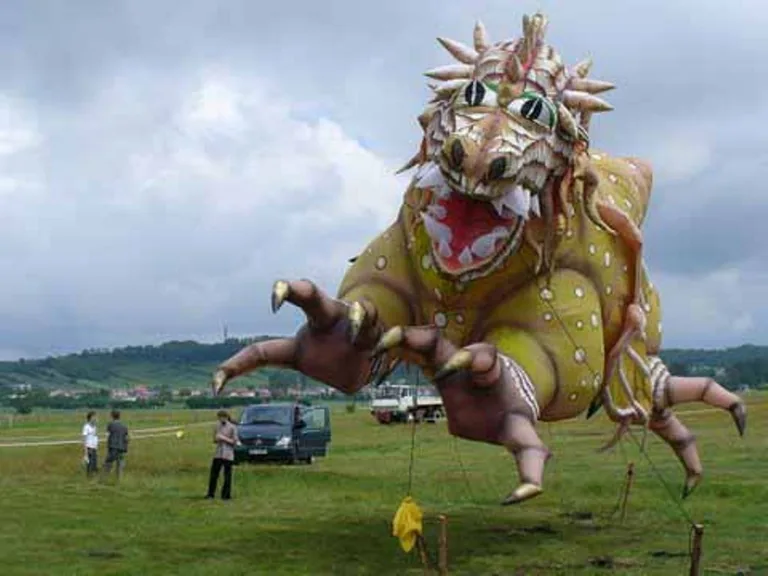
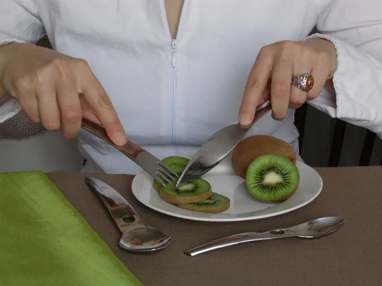
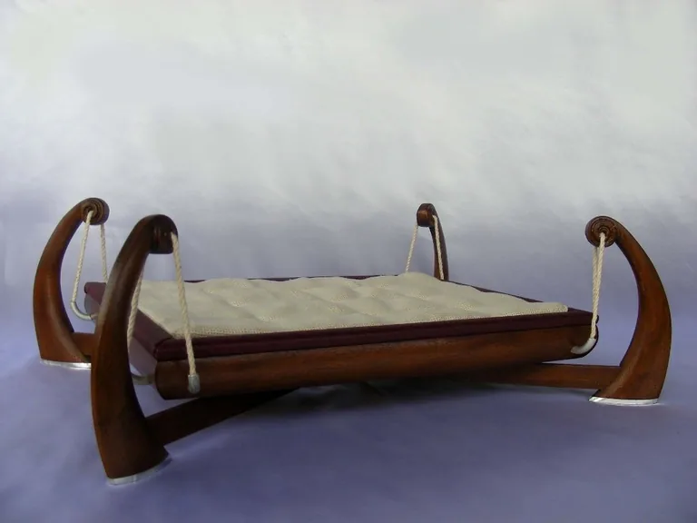
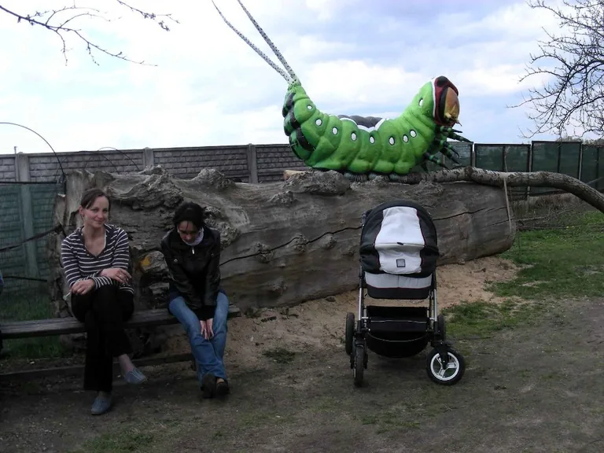
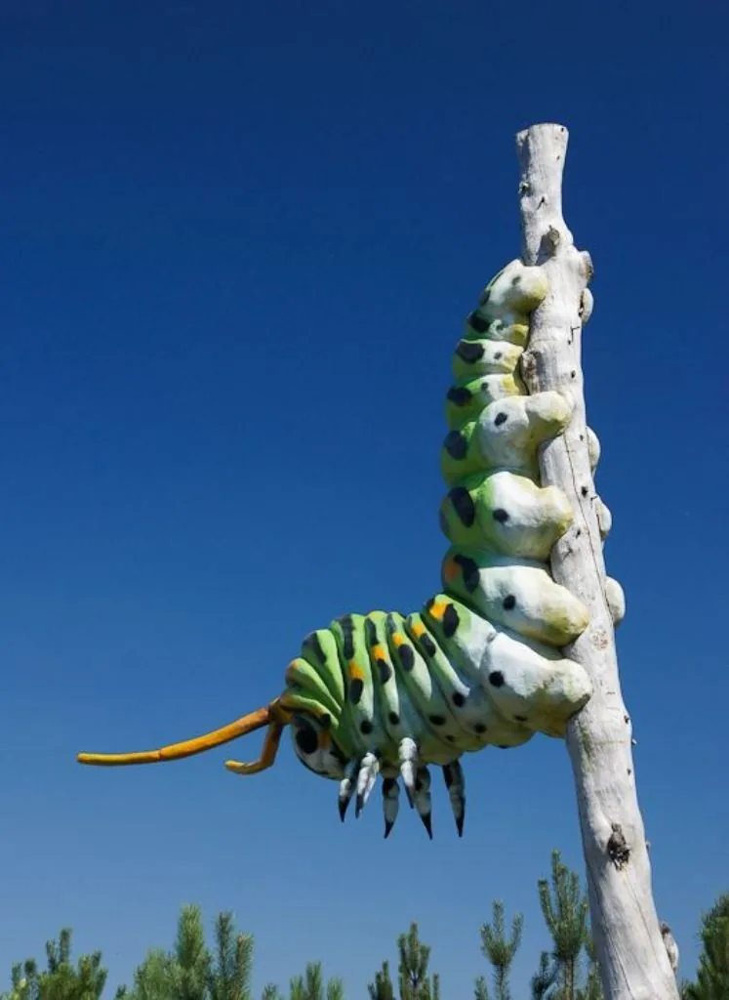

Projektant mebli, produktów i scenografii w Krakowie
Projektuję i wykonuję formy trójwymiarowe: unikatowe meble na zamówienie, produkty, scenografię teatralną i telewizyjną, wnętrza oraz wielkie owady do parków tematycznych.
Od szkicu do obiektu, który można obejść dookoła
Jestem absolwentem Wydziału Form Przemysłowych krakowskiej Akademii Sztuk Pięknych. Najbardziej pasjonują mnie formy trójwymiarowe, dlatego wiele projektów nie tylko projektuję, ale też sam wykonuję.
Współpracuję z firmami jako freelancer, prowadzę też warsztaty i zajęcia projektowe.
01Parki
Figury owadów w dużej skali do parków tematycznych i parków rozrywki. Projekt, konstrukcja i wykonanie, z gatunkiem odwzorowanym jak w atlasie: biedronki, jelonek rogacz, modliszka, kleszcz pastwiskowy, mucha domowa.
- Biedronka oczatka
- Biedronka siedmiokropka
- Jelonek rogacz
- Gąsienica pazia królowej
- Gąsienica widłogonki siwicy
- Modliszka europejska
- Mucha domowa
- Kleszcz pastwiskowy
- Chrabąszcz majowy
- Krzyżak zielony
02Meble
Unikatowe meble na indywidualne zamówienie: seria łóżek z giętego drewna, lampy, krzesło hotelowe, mebel audio i drzwi przesuwne.
- Lampa
- Lampa
- Łóżko 77
- Krzesło hotelowe
- Łóżko 11
- Łóżko 16
- Łóżko 1
- Projekt drzwi przesuwnych
03Scenografia i reklama zewnętrzna
Scenografia teatralna i telewizyjna, marionetki, maski, kostiumy do teledysków, smoki helowe oraz rzeźba i płaskorzeźba sakralna.
- Smok helowy
- Lekki smok - Pola Nadziei Kraków
- Marionetka Tiny Turner
- Marionetka Tiny Turner i fortepian
- Marionetka Elwisa Presleya
- Kostium do videoclipu OSTR'a
- Maska Bronisława Chromego
- Płaskorzeźba - ostatnia wieczerza
- Chrystus z figury Matki Bożej
- Stacja drogi krzyżowej nr9
04Produkt
Wzornictwo przemysłowe: oświetlenie, sprzęt audio i AGD, sztućce dla Gerlacha, świeczniki dla Artefe, samochód kempingowy Niewiadów (współpraca z G. Matusikiem), siedzisko parkowe.
- Kierownica rowerowa
- Lampa solarna
- Oczyszczacz powietrza
- Projekt okularów
- Projekt sztućców - Gerlach
- Projekt świeczników - Artefe
- Projekt samochodu campingowego - Niewiadów (współpraca z G. Matusikiem)
- Projekt zestawu audio
- Drewniana misa
- Projekt siedziska parkowego
05Wnętrza
Projekty garderób, kuchni i mebli do konkretnego wnętrza, dopasowane do miejsca i sposobu używania.
- Projekt garderoby
- Projekt garderoby
- Projekt garderoby
- Projekt garderoby
- Toaletka zebrano
- Wnętrze kuchni
06Logo
Znaki i logotypy, między innymi dla Stolarstwa Wagner i konferencji medycznej w Łodzi, oraz projekt ścianki reklamowej.
- Logo Wagner Projekt
- Logotyp Stolarstwo Wagner
- Logotyp Wagner 3D
- Logotyp Konferencji Medycznej - Łódź
- Projekt ścianki reklamowej - ZARYS Zabrze
Tomasz Wagner
Ukończyłem Wydział Form Przemysłowych ASP w Krakowie. Tworzę unikatowe meble na indywidualne zamówienia, projektuję sprzęt AGD i RTV, materiały POS, scenografię teatralną i telewizyjną oraz wnętrza. Projektuję i wykonuję obiekty do tematycznych parków rozrywki.
Współpracuję z wieloma firmami jako freelancer i prowadzę warsztaty oraz zajęcia projektowe.
- Meble na indywidualne zamówienie
- Wzornictwo przemysłowe, AGD i RTV
- Scenografia teatralna i telewizyjna
- Obiekty do parków tematycznych
07Prasa
Projekty pokazywane między innymi w Elle Decoration, Top Dom, magazynie Innowacyjny Start i katalogu 17. Biennale Wzornictwa Przemysłowego BIO w Lublanie.
- Elle
- Innowacyjny start
- Top dom
- BIO 2000
- Wzornictwo jakie mamy
- Eks magazyn
- Ogrody
Porozmawiajmy o projekcie
Mebel na wymiar, produkt do wdrożenia, scenografia albo figura do parku. Proszę napisać kilka słów o pomyśle, odpowiem z propozycją dalszych kroków.